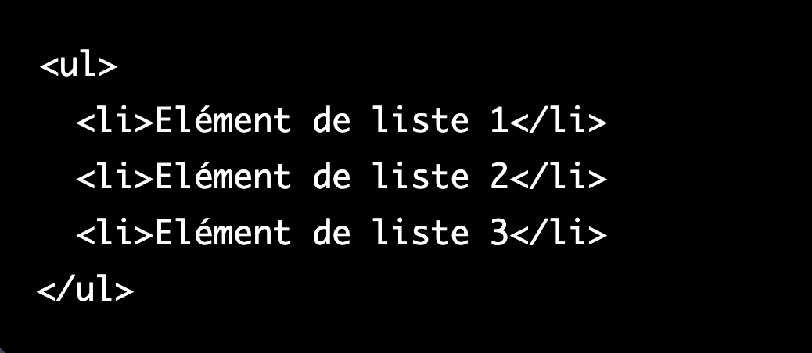
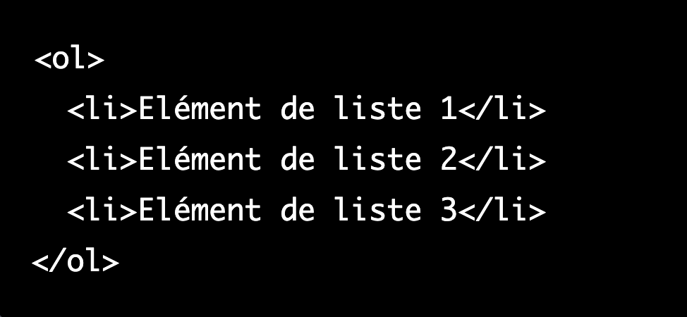

Les listes non ordonnées en HTML sont utilisées pour créer une liste de points ou d'éléments non ordonnés. Pour créer une liste non ordonnée en HTML, vous devez utiliser la balise <ul> (unordered list).
Voici comment utiliser les listes non ordonnées en HTML :
Ce code affichera une liste de trois éléments avec des puces devant chaque élément.
Vous pouvez également utiliser la balise <ol> (ordered list) pour créer une liste ordonnée, qui affichera des numéros devant chaque élément de la liste au lieu de puces.
Voici comment utiliser les listes ordonnées en HTML :
Il existe de nombreuses autres balises et attributs que vous pouvez utiliser pour contrôler l'apparence et le comportement des listes en HTML, tels que ‘type’ pour changer le style des puces ou des numéros, et ‘start’ pour définir le numéro de départ d'une liste ordonnée.